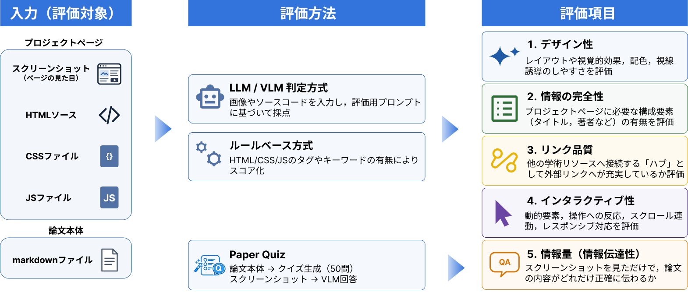

わかりやすいプロジェクトページを求めて
わかりやすいプロジェクトページを求めて

概要
よい研究も，その魅力が伝わらなければ多くの人には届かない．論文やコードとあわせて公開される「プロジェクトページ」は，研究成果を広く届けるための重要な入口である．一方で，どのようなページが研究の認知や理解につながるのかは，十分に整理されていない．
本プロジェクトでは，CVPR 2023–2025の論文を対象に，プロジェクトページの公開と引用数の関係，AIによる自動評価と人間の主観評価の関係，そして「わかりやすさ」を左右するデザイン要因を調査した．その結果，ページを公開している論文は引用数が高い傾向にあり，単に情報を多く載せることよりも，動画や図，レイアウト，図と文章のバランスを工夫することが重要だと分かった．
引用数
Project Pageの公開が研究の認知に貢献するかを検証するため，引用数を尺度としてProject Pageの有無による差を比較した． CVPRの3年間の論文を対象に各論文の引用数とProject Pageの有無を収集し，各年度の引用数の中央値および四分位範囲を可視化した． 3年分の結果によりPPの公開が引用数向上に貢献する結果が得られた

AI × HUMAN EVALUATION
定量評価
AIによる自動評価は，人の「わかりやすい」と一致するか？
Paper2Web は，Project Page（PP）の品質を，デザイン性（Aesthetic）・情報の完全性（Completeness）・リンク品質（Connectivity）・インタラクティブ性（Interactive）といった観点から自動評価する枠組みと，論文の内容がPPからどれだけ伝わるかをクイズ形式で測る PaperQuiz を提案している． 本調査ではこれらの既存指標を実際に公開されているPPに適用し，人間の主観的な「わかりやすさ」をどの程度捉えられるかを定量的に検証した．

CORRELATION WITH HUMAN RANKING
自動指標と主観評価の相関
指標名をクリックすると評価方法を表示
値は相関係数の平均 ± 標準偏差．右に伸びるほど，人間による高評価と同じ傾向を示す．
TAKEAWAY
「たくさん書く」より，「見やすく，簡潔に伝える」． 文字による情報量が多いPPよりも，デザイン性を重視した簡潔なPPのほうが高く評価される傾向が見られた． 実際のPPを用いた比較は定性評価を参照．
EVALUATED PROJECT PAGES
評価したProject Pageを見る
54 pages
サムネイルを選ぶと，そのPPの各指標の点数と人手評価の順位，そして実際のページを確認できる．
参照：Y. Chen et al., “Paper2Web: Let’s Make Your Paper Alive!,” arXiv:2510.15842, 2025. arXiv ↗
Paper Quizで生成される質問
複数のプロジェクトページを対象に評価を実施．以下は例として BARD-GS (CVPR 2025) の結果を示す．
detail QA （詳細事実の再現性）
13観点 A〜L は各2問・M は1問
| 観点 | 内容 |
|---|---|
| A | タイトル・著者（所属・キーワード含む） |
| B | 研究の動機・課題背景 |
| C | 目的・仮説 |
| D | データセット・実験材料 |
| E | 手法（アルゴリズム・モデル構造・処理フロー） |
| F | パラメータ・ハイパーパラメータ |
| G | 評価指標・基準 |
| H | 定量的な結果（表・グラフ中の数値） |
| I | 定性的な知見・図表の説明 |
| J | 比較実験・アブレーション結果 |
| K | 結論・貢献・示唆 |
| L | 限界・今後の課題 |
| M | 専門用語・略語の定義 |
understanding QA （高レベルな理解度）
10観点 全て各2問（B/D/E/F/H のみ追加1問）
| 観点 | 内容 |
|---|---|
| A | 研究分野・背景 |
| B | 中心的な課題・動機 |
| C | 主な目的・研究課題 |
| D | 主要な貢献・新規性 |
| E | 手法・ワークフローの概要 |
| F | 主要な（数値的）成果とその意義 |
| G | 定性的な知見・具体例 |
| H | 応用・意義 |
| I | 限界・今後の展望 |
| J | 結論・要点 |
定性評価
Project Page のわかりやすさに寄与するデザイン要因を明らかにするため，CVPR 2023–2025 の高被引用論文 75 本の PP を 6 名で精読し，"わかりやすさ" を左右する特徴を「第一印象」「操作性」「図と文の比率」「手法の伝達」の 4 観点に整理した． ここでは代表例として，CVPR 2025 に Oral として採択された論文 "Continuous 3D Perception Model with Persistent State"（CUT3R，Wang et al.）の PP を取り上げ，実際に公開されている PP（A. Original），Paper2Web による自動生成例（B. Paper2Web），悪い PP の特徴をもとに Claude Code で生成した例（C. Bad example）を 4 観点で比較する．
3 例の比較から，同じ論文であっても PP の設計次第で伝わりやすさが大きく変わることが確認できた．冒頭の動画と触れるデモを備えた A. Original に対し，B. Paper2Web は体裁こそ整っているものの図が少なく解説が冗長で，C. Bad example は文字のみで内容の判読が困難であった．
以上より，冒頭で内容が伝わる第一印象，動かして確かめられる操作性，図で見せる図と文章のバランスが，わかりやすい PP の条件として重要である．PP は論文では示せない動画や補足情報を発信できる媒体であり，こうした特性を活かした設計が研究の理解促進に寄与すると考えられる．
（参照: Q. Wang et al., "Continuous 3D Perception Model with Persistent State," CVPR 2025. https://cut3r.github.io/）
Poster
謝辞
本研究はMIRU2026 若手プログラムにおける活動の一環として行われました．また，本プログラムを通してメンターとしてご指導いただいた上田栞さんに深く感謝いたします．
BibTeX
@inproceedings{arimura2026yourpaper,
title = {Your Paper Title Here},
author = {Arimura, Yukitoshi and
Oumi, Yusuke and
Konno, Tsubasa and
Sugaya, Tomoki and
Takezaki, Jumpei and
Yamamoto, Riku},
booktitle = {MIRU},
year = {2026}
}